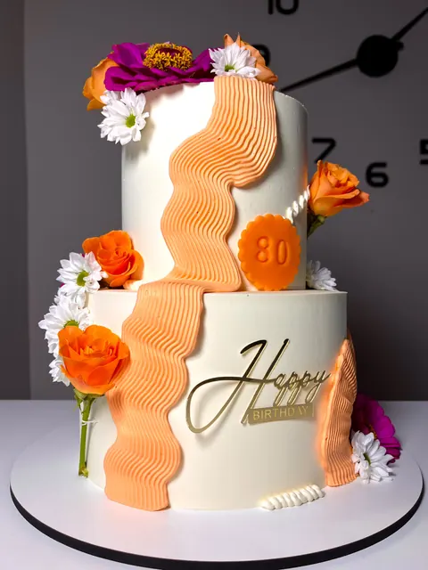

Torty na zamówienie
Na urodziny, chrzty, komunie i rocznice. Rozmiar, smak i dekorację ustalamy pod okazję i liczbę gości.
Na urodziny, chrzty, komunie, rocznice i rodzinne spotkania. Każdy tort projektujemy pod konkretną okazję: dobieramy rozmiar do liczby gości, smak do gustów solenizanta i dekorację do stylu przyjęcia. Możesz podesłać inspiracje albo po prostu opisać, jaki efekt chcesz uzyskać, resztę ustalimy razem. Odbiór osobisty w Chojeńcu albo lokalna dostawa, w zależności od terminu i miejsca.